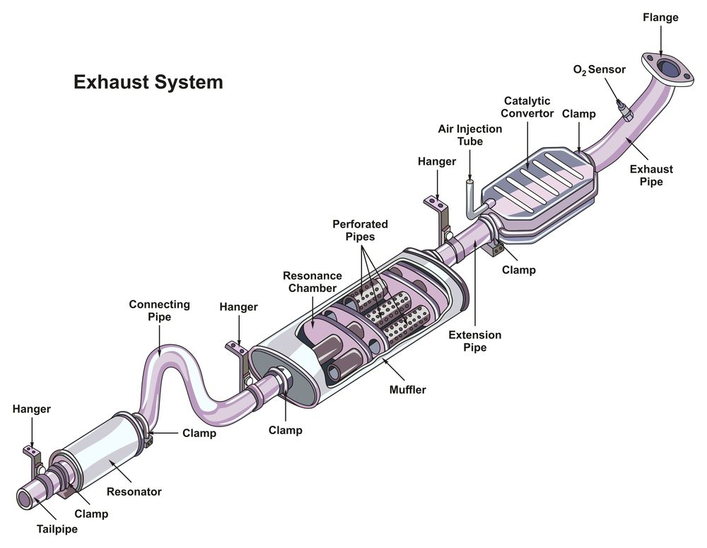

Exhaust System
The exhaust system channels combustion gases away from the engine and reduces noise and emissions. It includes components like the exhaust manifold, catalytic converter, muffler, and tailpipe.
Exhaust Flow Process
- Exhaust Manifold: Collects gases from the engine cylinders.
- Catalytic Converter: Converts toxic gases into safer compounds.
- Muffler: Reduces engine noise.
- Tailpipe: Releases cleaned gases into the atmosphere.
Key Components
- Exhaust Manifold: Channels gases from engine to exhaust system.
- Catalytic Converter: Essential for emission reduction.
- Muffler: Silences exhaust noise using sound-dampening chambers.
- Resonator: Tunes sound and helps reduce noise further.